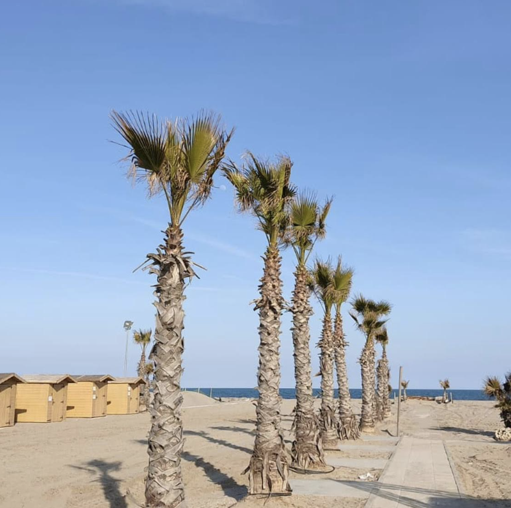
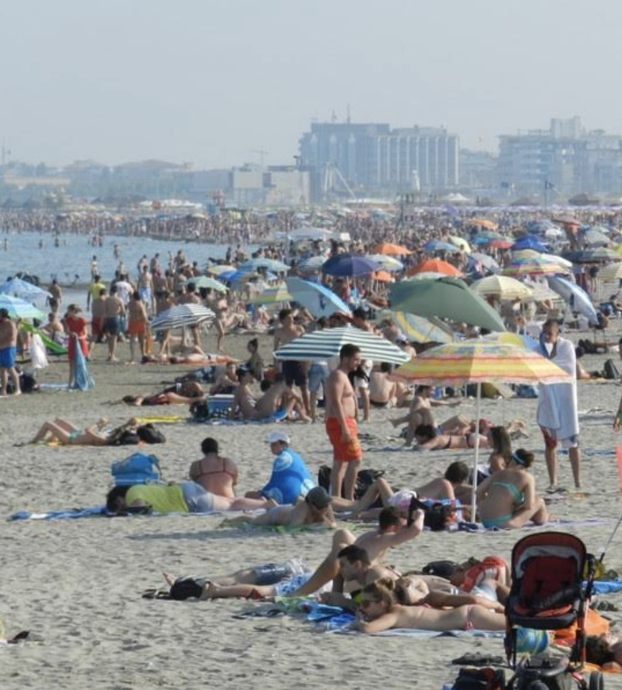
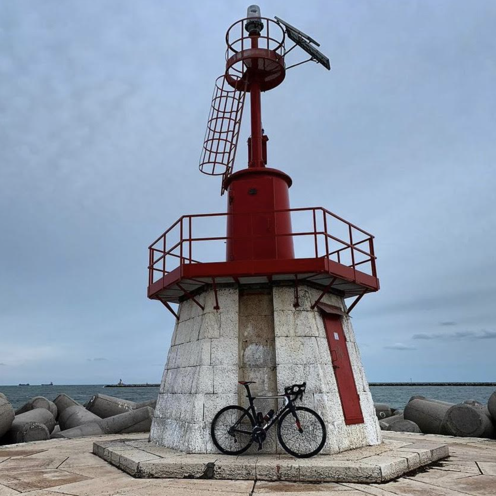
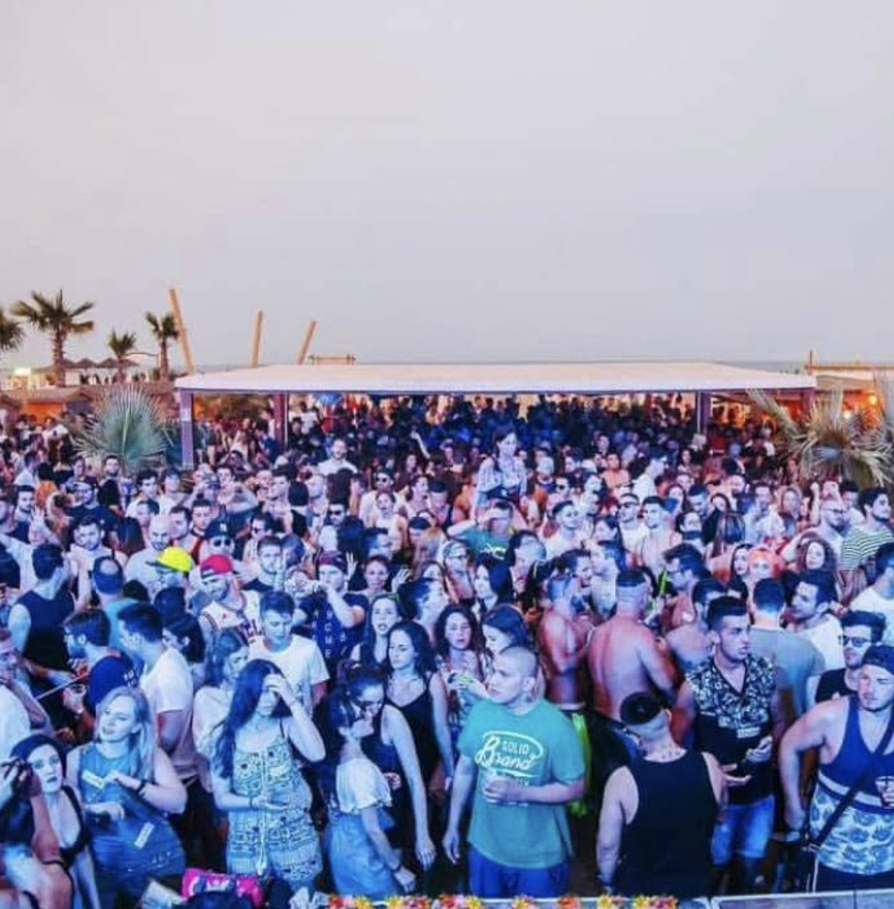

To go to Sottomarina you and your friends will take a waterbusvaporetto that in twentyventi minutes will bring to Chioggia, from where you'll walk towards Sottomarina.

Sottomarina is a beachspiaggia area, much bigger than Pellestrina, with a lot more people and with a better organised beach: you can rent beach umbrellasombrelloni and deckchairs.
Sottomarina has a lighthousefaro that you can go to by simply walking from the beach, it takes a while but it is definitely worth it.

To end the day, you friends brings you to Cayo Blanco which is a disco by the beach right in the centre of Sottomarina. Your friends love techno, but you prefer raeggaton, and here they play bothentrambi depending on the day.

Click on "Final" if you want to continue meeting people and visiting Pellestrina.
Or click "Go back" if you want to relive some island experiences.